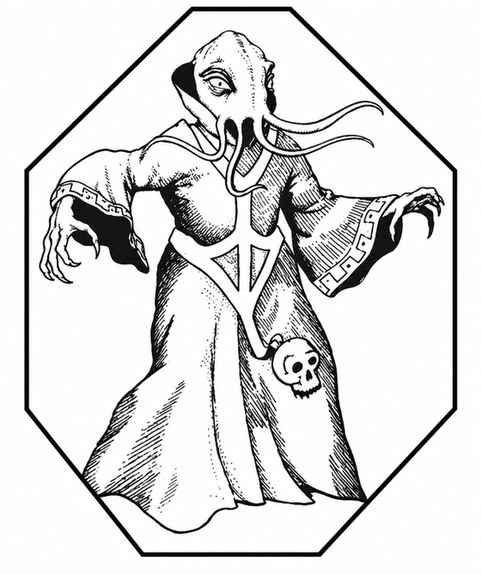
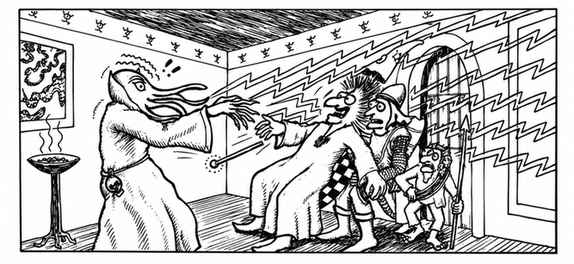

夺心魔 · Mind Flayer
 |
|
夺心魔只出现在地下，因为它们厌恶阳光；它们极端邪恶，把绝大多数人类及其近亲视为供自己食用的牲畜。
夺心魔的肉体攻击是用四条触手抽打目标。只要一条触手命中，它会在 1–4 轮内伸入对手大脑并将其抽出，立即杀死目标，随后吞食大脑。不过它们更令人恐惧的攻击是灵能心灵爆破：在以释放点为顶点、近处直径 3/4 寸、最远处直径 2 寸的 6 寸方向锥内，所有目标都会受到影响（对非灵能生物视为灵能攻击）。
夺心魔拥有悬浮术、支配术、心灵感应（ESP）、身体平衡、星界投射和概率旅行等灵能能力，均达到 7 级掌握程度。若战局对其不利，夺心魔会立即逃走，不顾同伴或财宝。
它们只使用自己的奥术语言和数种其他怪异语言，据说其中包括来自地下世界更深处、远在人类探索范围之外的恐怖种族语言。夺心魔的皮肤因黏液而闪亮，颜色为令人作呕的紫红色，触手呈紫黑色；双眼死白且没有瞳孔，每只手有三根长手指，颜色偏红，而手掌呈紫红色。
